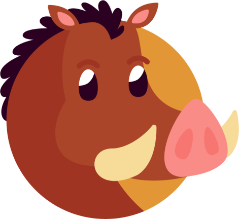
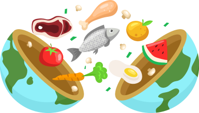

El jabalí, una criatura salvaje y robusta, es conocido por su apariencia distintiva y su estilo de vida en la naturaleza.
Hábitat: Se encuentran en diversas regiones del mundo por su adaptabilidad, desde bosques y selvas hasta llanuras abiertas.


Dieta: El jabalí es omnívoro y se alimenta de una dieta variada que incluye raíces, frutas, pequeños mamíferos e insectos.
Características Físicas: Tiene un pelaje grueso y áspero los machos tienen colmillos sus patas son guertes y robustas.